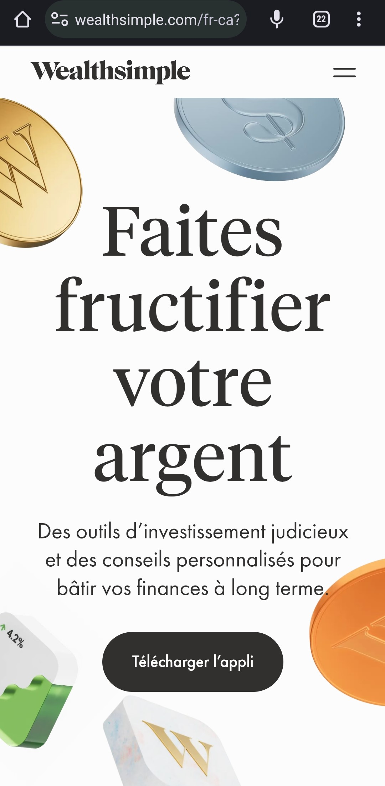
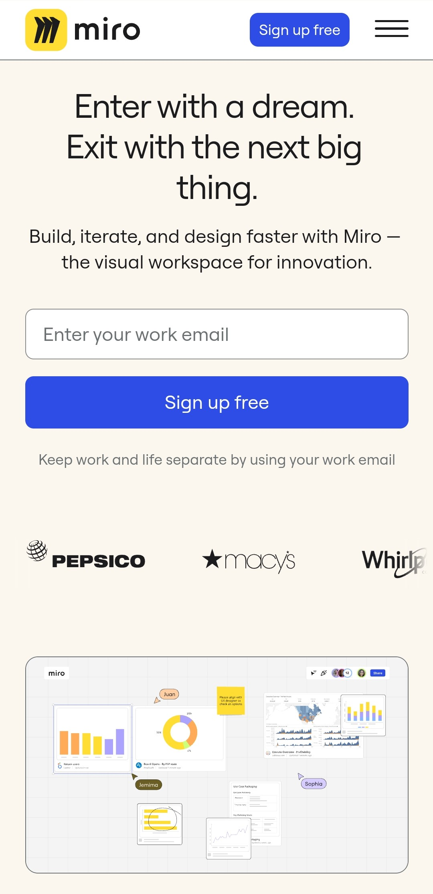
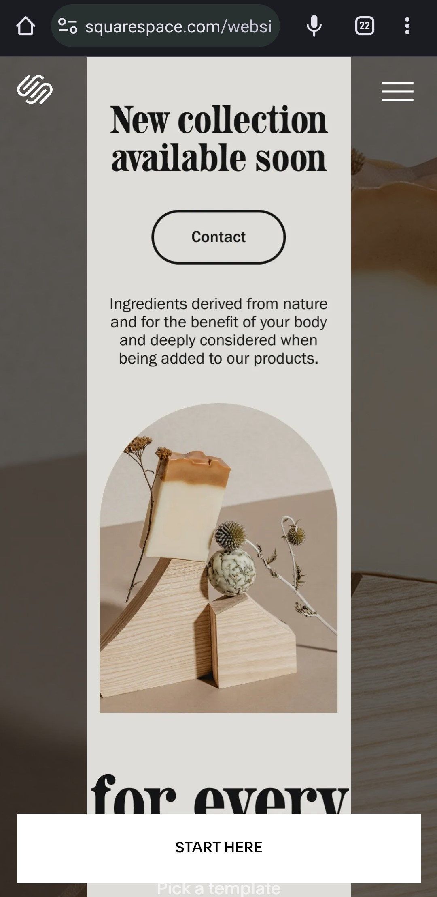

Desing Principles Document
Benjamin Amaro
Visual Hierarchy
WealthSimple
wealthsimple.com

This is a good exemple of how visual hierarchy works, the first bigger text bring the attention of the user to the center right away, and the thing that they offer is to "grow your money" once the website took your attention you can see aditional information like invest, spend and save pricing and learn, but it is the job of the visual hierarchy to capt your attention to stay in the website long enough.
Hick's Law
Miro
Miro.com

the application of Hick's law is well represented in this website and the reason is that you only have one option, "Sing up" they don't ask you for what kind of whiteboard you are lookinh for, or what do you need, they just tell you start by making a conection with me and then we will talk about the complexity of this tool, this is a good way to altmost to obligate the user to interact with your website
White Space and Clean Design
SquareSpace
squarespace.com

"less is more" this is why SquareSpace decided to desing their website using "White Space and Clean Design" the page itselfs lets you understand that there is not pression, you can go freely through the information without interruptions, giving the user a feeling of clean and relax experience, giving you the impression that doing business with them is simple and that you can trust them.